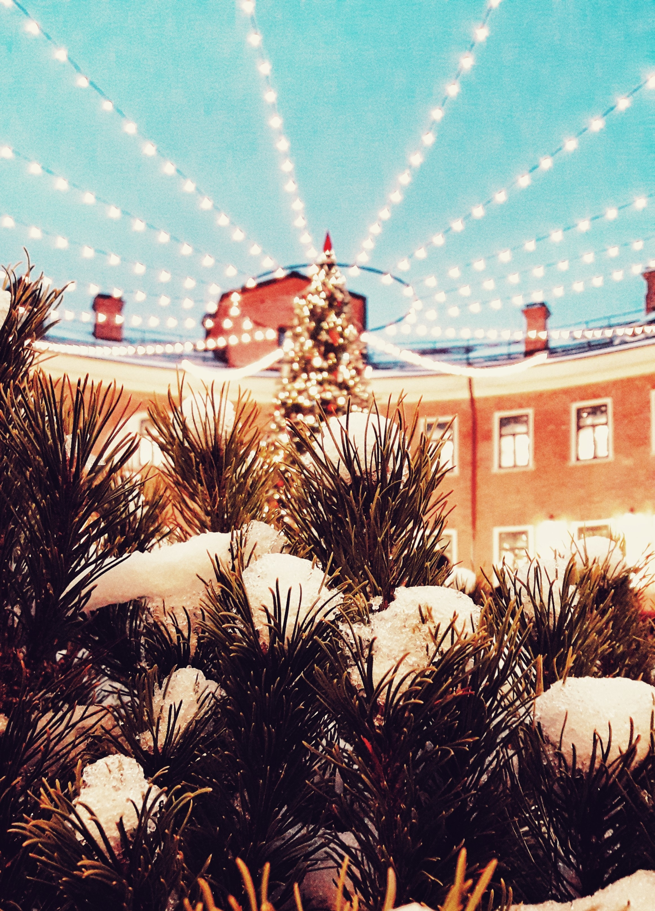
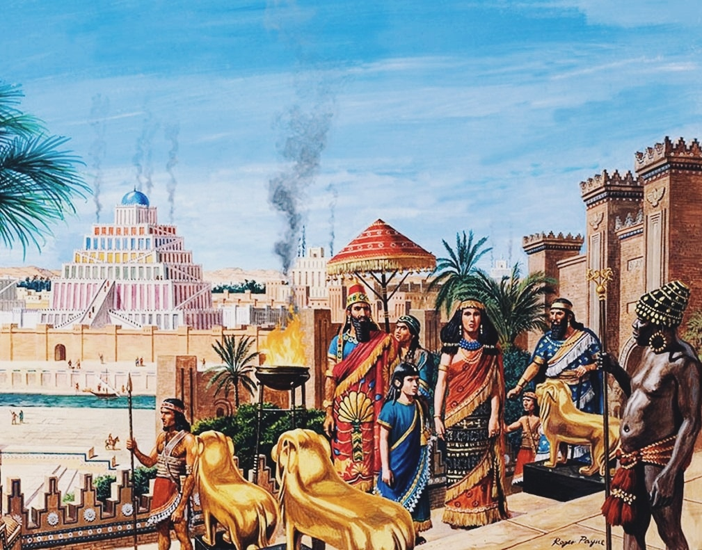
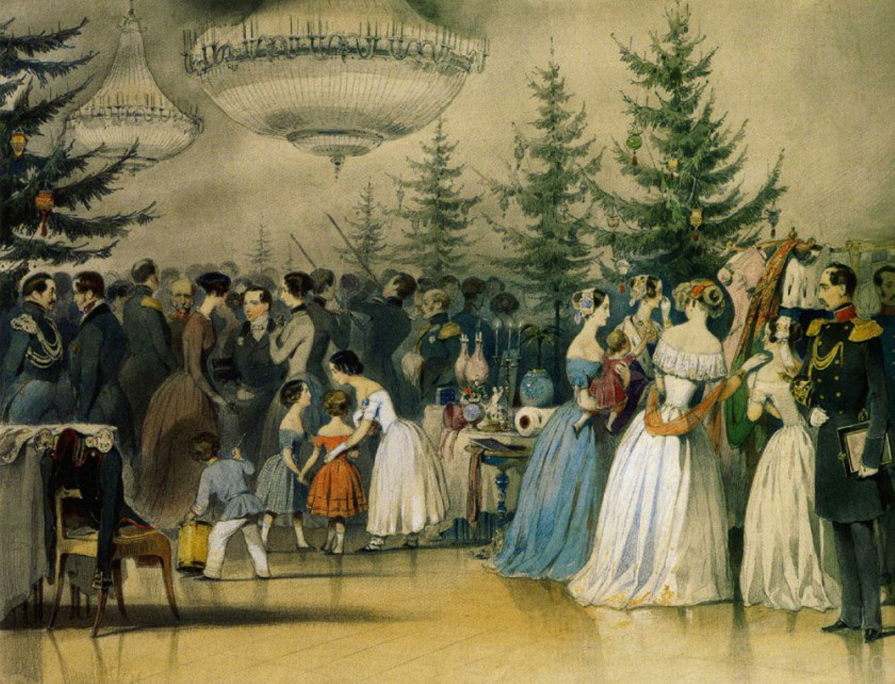
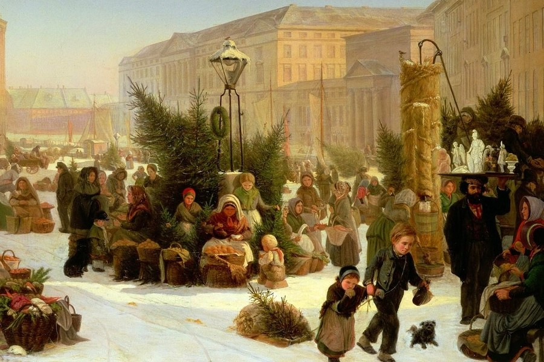
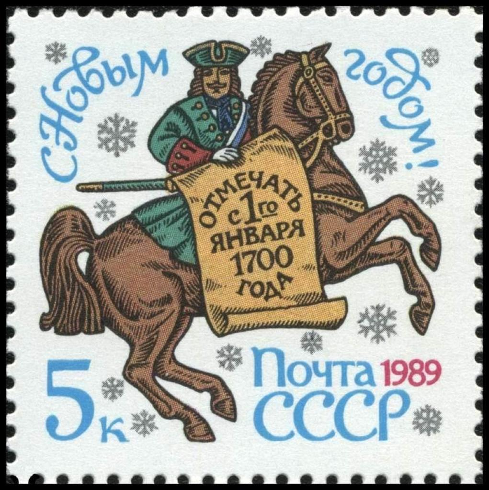

Первые документальные свидетельства о праздновании Нового года восходят к третьему тысячелетию до нашей эры,
но историки полагают, что праздник еще древнее.
Получается, что Новый год — самый древний праздник, который отмечали и продолжают отмечать разных странах в разное время.
Впервые обычай праздновать Новый год появился в Древней Месопотамии. Новый год в Вавилоне отмечали в день весеннего
равноденствия – в это время природа просыпалась от зимнего сна. Праздник был установлен в честь покровителя города — верховного бога Мардука.
Праздновали Новый год маскарадами, карнавалами и шествиями в течение 12 дней, начиная с конца марта, после того как прибывала вода в Тигре и Евфрате
и начинались земледельческие работы. Люди веселились и гуляли, так как работать в эти дни запрещалось.

Со временем эту традицию переняли греки и египтяне, затем она перешла к римлянам и так далее.
В Древней Греции Новый год наступал в день летнего солнцестояния — 22 июня, и посвящался Дионису — богу виноделия. Греки вели свое летоисчисление от знаменитых Олимпийских игр.
На протяжении веков в Древнем Египте в период с июля по сентябрь праздновали разлив реки Нил. Это было жизненно важное событие, знаменующее начало нового посевного сезона.
Вода Нила в это время считалась чудодейственной, и у египтян был обычай при праздновании Нового года из разливающегося Нила наполнять специальные сосуды "святой водой".
Египтяне верили, что воды Нила смывают все старое.
Кстати, именно тогда было принято устраивать ночные празднования с танцами и музыкой и дарить друг другу подарки.

Китайский Новый год — Чунь цзе, что значит Праздник Весны, является для китайцев самым важным праздником, его отмечают уже более двух тысяч лет.
Новый год по китайскому календарю в старину праздновали целый месяц.
Дата празднования китайского Нового года, который зависит от лунного календаря и наступает в первое новолуние нового года, в промежутке от 17 января до 19 февраля.
В обиходе Чунь цзе называется «Нянь» (нянь — значит «год»).
По преданию, Нянь — это страшное лютое чудовище с рогами на голове, жившее в древнем Китае.
Круглый год он находился в пучине моря и только в канун нового года вылезал из воды, врывался в селения, пожирал там скотину и губил людей.
Поэтому местные крестьяне очень боялись его и ежегодно перед наступлением нового года целыми семьями покидали села и убегали в глубину гор, чтобы спрятаться от хищного зверя Няня.
В новогоднюю ночь во время праздничной процессии, которая проходит по улицам Китая, люди зажигают множество фонарей.
Это делается для того, чтобы осветить себе путь в Новый год. Китайцы, в отличие от европейцев, встречающих Новый год с елкой, предпочитают мандарины и апельсины.
Языческий Новый год славяне праздновали в День зимнего солнцестояния и связывали его с божеством Колядой.
Главным символом был огонь костра, который изображал и призывал свет солнца после самой долгой ночи в году.
Новый год также связывали с плодородием. По славянскому календарю сейчас наступает 7526 год – год Свернувшегося Ежа.
Последний раз в сентябре Новый год на Руси был отпразднован в 1698 году. Оделяя каждого яблоком, царь называл каждого братом и поздравлял с Новым годом, с новым счастьем.

В 1699 году Петр I издал указ, согласно которому началом года стали считать 1 января.
Царь следил за тем, чтобы новогодний праздник был в царской России не хуже и не беднее, чем в других странах.
Елки украшали фруктами, овощами, конфетами и орехами, а наряжать новогодними игрушками
стали намного позднее.

Первый Новый год с измененной датой начался парадом на Красной площади в Москве.
А вечером небо было разукрашено красочными огнями фейерверка, люди танцевали, пели, веселились и дарили друг другу новогодние подарки.
Именно с 1 января 1700 года новогодние гуляния получили свое народное признание. Празднование Нового года стало носить светский характер.
С тех пор этот праздник прочно закрепился в российском календаре.
Уже в ноябре на улицах городов появляются праздничная иллюминация и наряженные елки.
Раньше люди верили, что, украшая елку, они делают злые силы добрее.
О злых силах давно забыли, но новогодняя елка, украшенная всевозможными игрушками и гирляндами, по-прежнему является символом этого праздника.
Новогодняя магия привлекает множество туристов, желающих погрузиться в атмосферу, созданную этим праздником.
Города удивительно преображаются от ярких огней и украшенных витрин.
В центре города и торговых центрах проводятся ярмарки, где в маленьких домиках продаются подарки и праздничные украшения,
пахнет горячим какао и глинтвейном, развешаны пряники и прочие сладости.
Где-то десятки, а где-то и сотни столов, на которых выставлено то, чем можно порадовать даже самого избирательного человека.
От обилия сувениров разбегаются глаза, поэтому перед тем, как отправиться на праздничную барахолку, хорошенько подумайте, что и для кого вы планируете приобрести.